Dois avisos, um só componente
O aviso de cotas incompletas usava o mesmo padrão visual do aviso de dados faltando, e passava despercebido pelo cliente.
Decisão
Diferenciar visualmente os dois estados.
A corretora concentrava as principais interações do cliente numa plataforma digital: onboarding Pessoa Física e Pessoa Jurídica, gestão de documentos, acompanhamento de operações de câmbio, solicitações de cartão pré-pago e câmbio turismo, além de um painel administrativo interno.
Atuei como Product Designer no Grupo Advanced, contribuindo em múltiplas frentes do produto, com onboarding de clientes Pessoa Física e Pessoa Jurídica, MFA no login (verificação em duas etapas), gestão de arquivos, painel administrativo, operações de câmbio, e-mails transacionais, Design System e o aplicativo de investimentos.
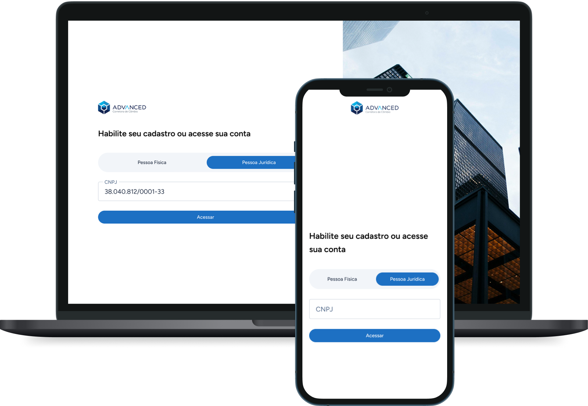
Redesenhar o onboarding digital do Grupo Advanced foi um projeto de 8 meses, da descoberta às telas finais.
O cadastro de Pessoa Jurídica era muitas vezes preenchido por um funcionário sem acesso a todos os dados da empresa. Sem um jeito claro de pausar e retomar, o cliente precisava recomeçar do zero.
Troquei o stepper linear por uma navegação por seções, com salvamento automático, permitindo pausar e retomar o cadastro sem perder o que já foi preenchido.
Decisões de UI e UX
Discovery cross-functional e benchmarking
Antes de desenhar qualquer tela, mapeei como corretoras e fintechs referências resolviam onboarding, documentei as funcionalidades e regras de negócio e alinhei prioridades em discovery com TI, atendimento, stakeholders de negócio e a área de Onboarding, que tratava da documentação do cliente e repassava pra compliance e jurídico quando necessário.


Design System
Componentes, tokens e espaçamentos que estruturam a construção de UI do produto.
Tipografia
A tipografia escolhida foi a Figtree, uma fonte aberta do Google Fonts, sem serifa, o que traz uma leitura limpa e moderna nas telas. Ela tem uma família grande, com várias variações de peso e itálico que compartilham o mesmo desenho base, então deu pra usar só essa fonte no produto, sem precisar combinar com outra.
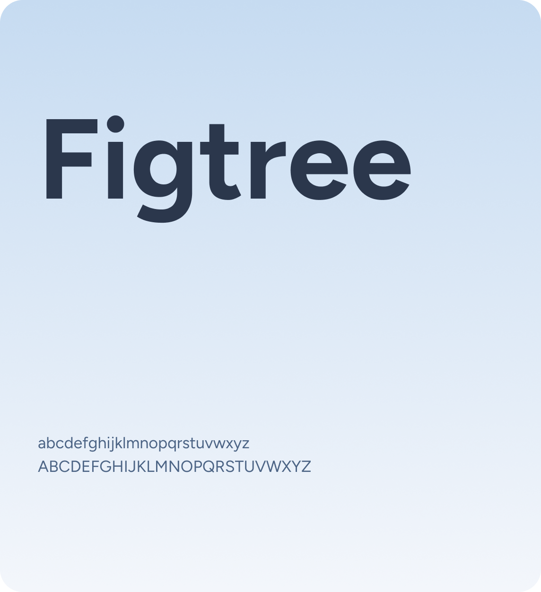
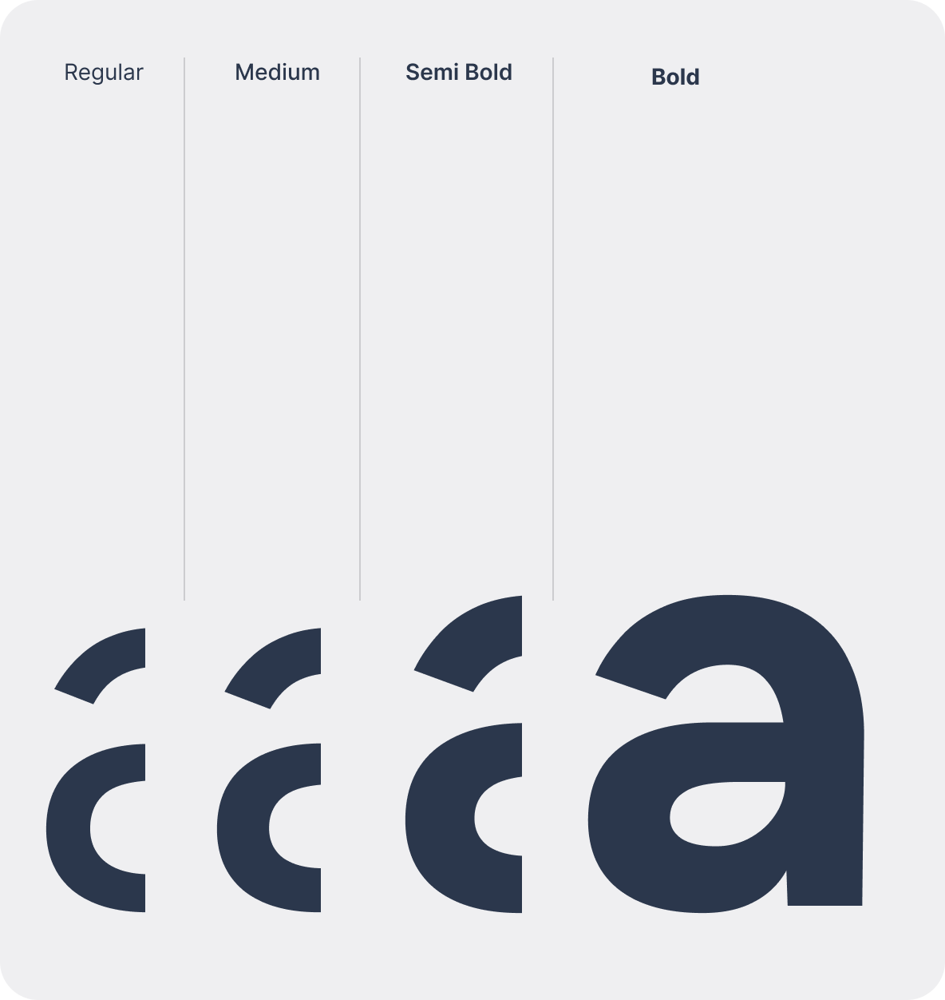
Cores
A paleta foi alinhada com o manual da marca, construída para transmitir confiança e clareza em um produto financeiro B2B.
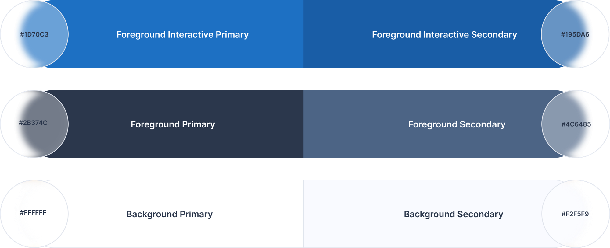
Grid System
Estrutura de 12 colunas no desktop e 4 no mobile, com espaçamentos que se adaptam à resolução e mantêm o alinhamento consistente em qualquer tamanho de tela.
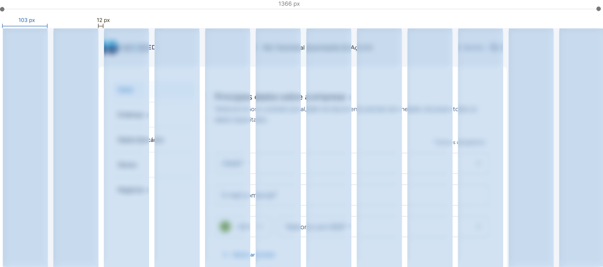
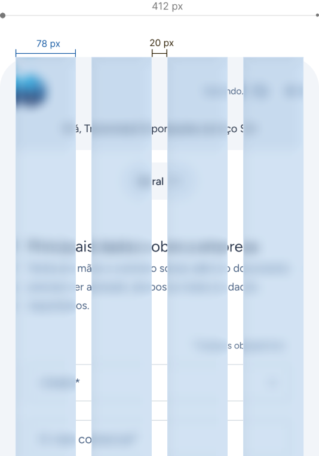
Telas de alta fidelidade
As telas finais do onboarding, já com as decisões de fluxo e conteúdo validadas no discovery.
Desktop


Mobile
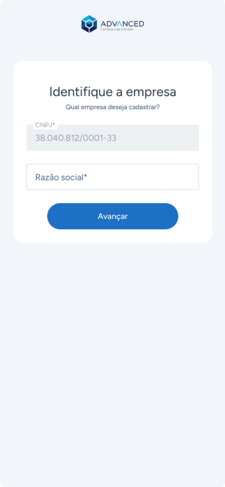
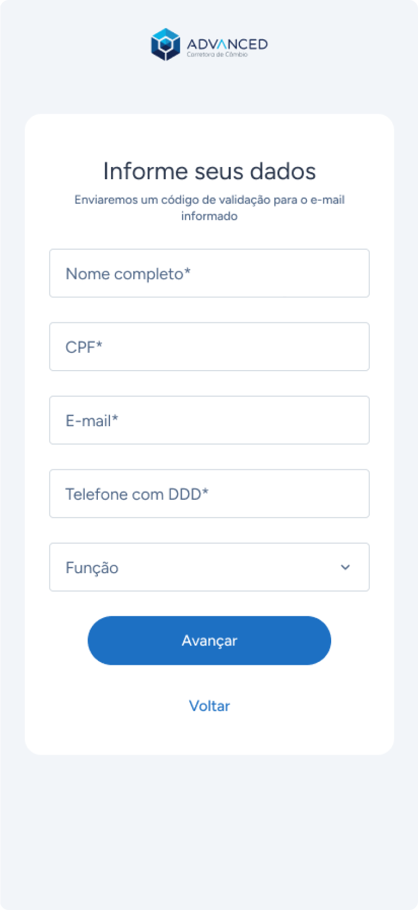
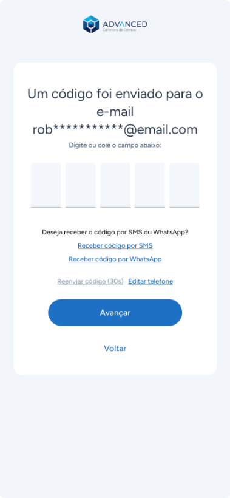
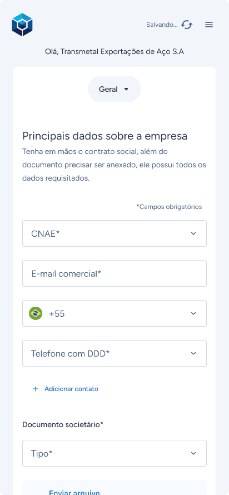
Antes e depois
Nos dois pontos onde a mudança foi mais visível, arraste o controle pra comparar o fluxo antigo com o redesenhado.

Dados da empresa

Sócios e representantes
Teste de usabilidade: condução e insights
Conduzi esse teste de usabilidade: planejei o roteiro de tarefas, moderei as três entrevistas, registrei os insights em tempo real e apresentei os resultados priorizados para o time do projeto.
Insight → decisão
O aviso de cotas incompletas usava o mesmo padrão visual do aviso de dados faltando, e passava despercebido pelo cliente.
Diferenciar visualmente os dois estados.
Sem separação clara entre os dois códigos, os clientes erravam o preenchimento.
Campo dividido em seletor de DDI + DDD digitável.
Por falta de sinalização sobre o que era obrigatório (FACTA opcional, LGPD e Termo de adesão obrigatórios), os clientes marcavam os três como se fossem iguais.
Revisão da sinalização de obrigatoriedade.
Os clientes tentavam voltar pelo mesmo link recebido por e-mail, sem saber que os dados ficavam salvos.
Aviso de saída explicando o prazo de retenção dos dados e um caminho de acesso via login.
O que eu levo desse projeto
O redesign do onboarding me ensinou a equilibrar duas prioridades que nem sempre andam juntas: as regras de compliance de um produto financeiro e a experiência de quem só quer terminar o cadastro. Cada decisão, de separar Pessoa Física de Pessoa Jurídica a dividir o campo de telefone em DDI e DDD, veio de um problema real observado no teste de usabilidade, não de suposição.
O antes e depois mostra a distância entre o que existia e o que ficou, mas o número que mais importa pra mim é outro: 13 pontos de melhoria priorizados com dados reais de cliente, não achismo de time.
Retomar o cadastro depois de sair era uma reclamação recorrente, principalmente de quem preenchia sem ter todos os dados em mãos. O teste confirmou isso como um dos pontos mais críticos, e resolver esse caminho de retomada foi uma das decisões que mais fez diferença no dia a dia do time.
Criar o fluxo de pré-cadastro exigido pelo Banco Central foi outra frente dentro do trabalho no Grupo Advanced.
O Banco Central passou a exigir que o próprio cliente confirmasse seus dados antes do cadastro virar oficial, uma validação que o painel ainda não tinha.
Um fluxo de pré-cadastro: o executivo capta os dados básicos e cria um registro no painel, que gera um link para o cliente confirmar ou completar as informações.
Decisões de UI e UX
Componentes e status
O painel administrativo era um produto legado, sem um design system estruturado antes desse projeto. Apliquei os componentes e tokens que estávamos consolidando no Onboarding Digital nessa interface mais antiga: um sistema de status para acompanhar o progresso de cada cliente e um card expansível para consultar os dados sem sair da lista.
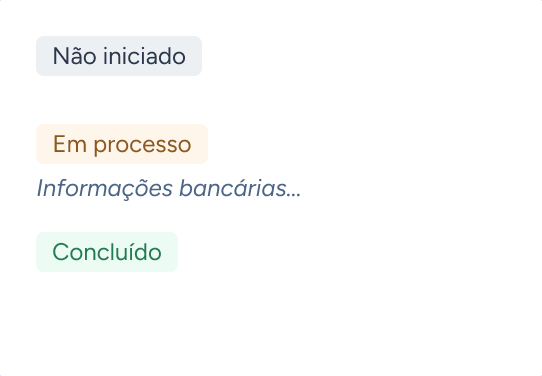
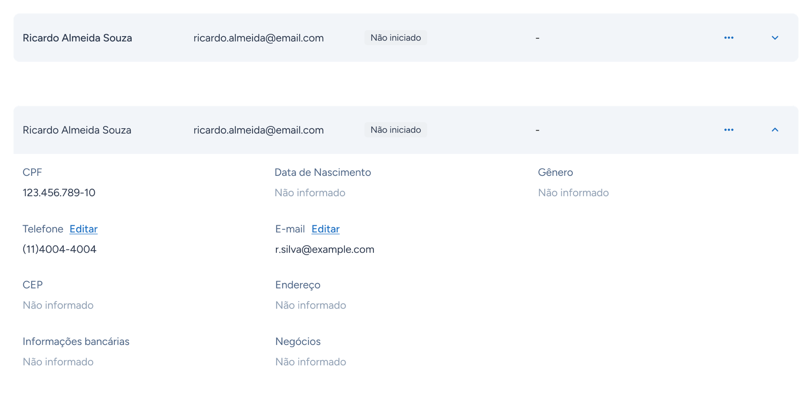
Teste de usabilidade com o time comercial
Depois que o fluxo foi ao ar, conduzi um teste de usabilidade com executivos do time comercial, que usam o painel no dia a dia, cobrindo as três partes do fluxo: criação do prospect, o cadastro feito pelo executivo e a revisão do lado do cliente.

Insight → decisão
Todos os participantes tiveram dúvida entre as duas opções do modal de início de cadastro.
Revisão da hierarquia visual e da copy dos dois caminhos.
Um participante relatou insegurança sobre se o cliente tinha sido efetivamente salvo na carteira depois de enviar.
Confirmação de sucesso mais visível no painel, além da tela de feedback.
Uma participante rolou a tabela inteira até o final procurando o total de prospects, que já existia no topo.
Dar mais destaque a essa informação na tabela.
Nenhum participante compreendeu de imediato o que esse status significava, gerando interpretações diferentes entre eles.
Revisão da nomenclatura de status.
Participantes questionaram como identificar, na lista, os prospects com cadastro simplificado dos com cadastro completo.
Sinalizar visualmente os clientes com operação esperada acima de US$ 50 mil, considerados cadastro completo.
Participantes fechavam a tela de feedback rapidamente e, quando questionados sobre o conteúdo, respondiam com dúvida.
Revisão da copy do botão.
Mesmo com o atalho disponível desde o início, todos os participantes preferiram seguir até a última etapa do formulário para então enviar o link.
Manter o comportamento como estava, sem forçar um atalho que os usuários não pediram.
Telas
Como ficou depois de aplicar as decisões de fluxo, os componentes reaproveitados e os ajustes confirmados no teste de usabilidade.


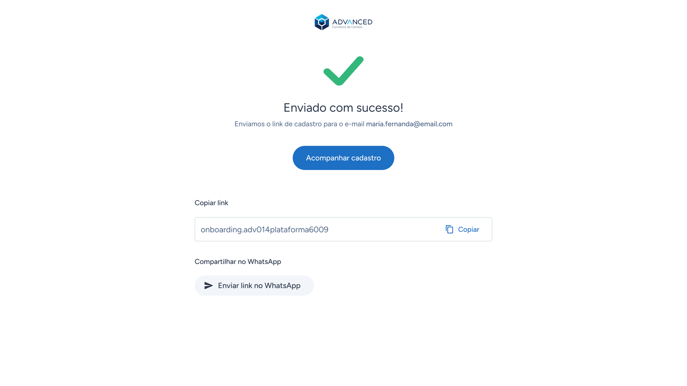
O que eu levo desse projeto
Desenhar esse fluxo me ensinou a validar hipótese rápido em vez de esperar um discovery longo: sem um produto de mercado parecido pra comparar, as decisões de UX foram surgindo e sendo ajustadas conforme o processo avançava, não definidas de antemão.
O teste de usabilidade com quem realmente usa o painel no dia a dia confirmou pontos de confusão que provavelmente passariam despercebidos sem testar com o time comercial diretamente, como a dúvida entre "enviar para preencher" e "enviar para revisar", o achado de maior impacto do teste.
Também participei de reuniões de alinhamento com a liderança comercial ao longo do projeto, validando decisões de fluxo e prioridade diretamente com quem enxerga o produto do lado do negócio, não só do lado do usuário final.
Esse é um projeto conceitual, sem cliente real por trás: desenvolvi para explorar como a marca do Grupo Advanced poderia se posicionar no segmento de investimentos digitais, cobrindo a jornada completa do usuário, do acesso à aplicação e ao acompanhamento de rendimentos.
Pesquisa de posicionamento
Mapeei onde XP, C6 Bank e Wise se posicionavam em dois espectros (tradicional↔arrojado e sóbrio↔efusivo) e usei essa análise pra definir a posição da Advanced: arrojada na proposta visual, mas sóbria no tom, considerando o público de ticket médio acima de R$ 200 mil.
Critérios de cada eixo
Cada eixo tem critérios concretos de UI por trás, não só uma leitura subjetiva de estilo.
Três direções exploradas
Apresentei três direções visuais para o time: uma em azul-marinho, uma em branco e uma em grafite. A última foi a aprovada, por equilibrar melhor o posicionamento sóbrio e arrojado validado com o marketing.
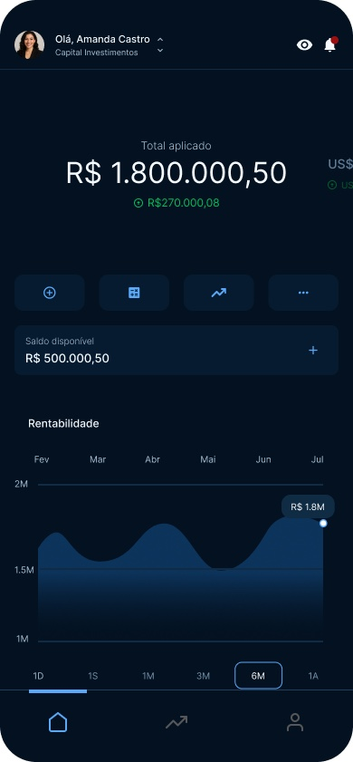
Esta proposta explora uma leitura mais arrojada, com contraste forte entre o fundo escuro e o azul vibrante nos elementos de destaque. Comunica energia e modernidade, mas se afasta um pouco do tom sóbrio esperado pelo público de ticket médio acima de R$ 200 mil.
Intuitiva pra quem já usa outras soluções do mercado, como C6 Bank e BTG Pactual. Mantém o azul como âncora da identidade principal, reforçando o reconhecimento da marca.
Pode ser percebida como parecida com outras soluções do mercado, o que limita a diferenciação da Advanced.
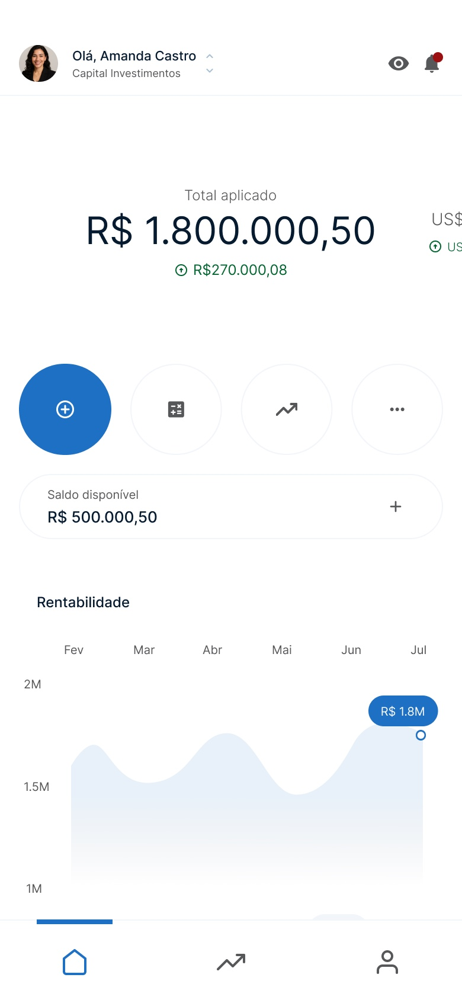
Esta proposta busca reforçar a identidade visual já consolidada nos produtos digitais da empresa, combinando leveza, clareza e consistência. Transmite confiabilidade ao usuário, mantendo alinhamento com o Design System (Skyward) e garantindo uma experiência coesa em todo o ecossistema.
Mantém alinhamento com os outros produtos digitais da empresa e com o Design System (Skyward) em produção, aproximando a experiência do que os usuários da Advanced já conhecem.
Reduz o posicionamento de exclusividade por causa das cores claras, e fica menos sóbria e arrojada que as outras direções.
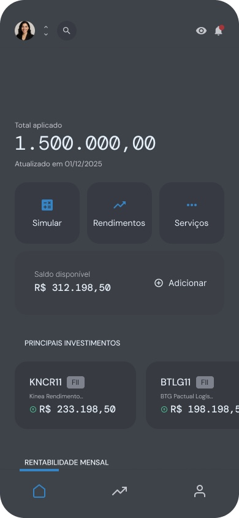
Esta proposta adota um conceito ousado, inspirado na textura visual de "papel". Utiliza cores opacas, evitando preto e branco absolutos, e combina tipografias serifadas e sans-serif para criar contraste entre o clássico e o moderno. O resultado é uma interface que equilibra tradição e inovação, com uma experiência visual sofisticada.
Equilibra tradição e modernidade, alinhada ao público-alvo. Fortalece uma identidade visual própria, com espaço pra se diferenciar da marca principal.
Por ser bem diferente da linguagem visual atual, pode causar estranhamento inicial ou parecer distante da identidade principal da Advanced.
Acessibilidade
Testei as 3 direções visuais pensando em legibilidade antes de qualquer decisão de estilo, seguindo o padrão de acessibilidade que uso em todos os projetos.
Validei os textos e elementos de interface das 3 propostas com os critérios de contraste do WCAG 2.0, garantindo legibilidade em qualquer uma das direções.
Simulei as telas em protanopia e deuteranopia, os tipos mais comuns de daltonismo, pra confirmar que nenhuma informação dependia só da cor pra ser entendida.
Prototipação com IA no Figma Make
Com a direção grafite aprovada, prototipei os principais fluxos do app inteiramente com a IA do Figma Make, ganhando velocidade sem abrir mão da qualidade de interação:
O que eu levo desse projeto
Esse projeto me ensinou a desenhar identidade visual como decisão estratégica, não só estética: cada uma das três direções carregava uma leitura de marca diferente, e defender a escolha final exigiu embasar a proposta num framework de posicionamento, não só em gosto pessoal.
Trabalhar com o marketing por causa do manual da marca também mudou como eu penso decisão de cor daqui pra frente: uma paleta que funciona bem numa tela isolada pode não representar a marca do jeito que a empresa quer ser vista, e essa troca entre áreas foi o que confirmou o grafite como a direção certa.
Prototipar os fluxos principais inteiramente com a IA do Figma Make encurtou bastante a distância entre a direção aprovada e um protótipo navegável, o que ajudou a apresentar e validar a proposta com mais confiança.